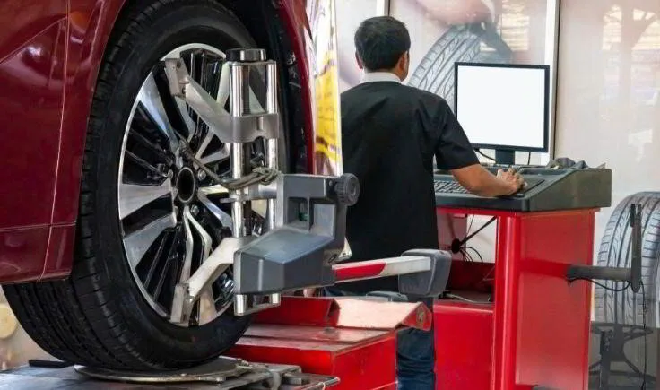
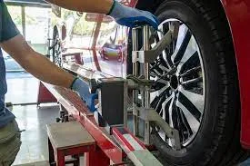

Alineación: El Secreto para una Conducción Segura y Eficiente
Publicado el
La alineación es un procedimiento esencial para mantener la estabilidad y el desempeño óptimo de cualquier vehículo. Muchos conductores no le prestan atención hasta que experimentan problemas, pero hacerlo a tiempo puede evitar desgastes innecesarios y mejorar la seguridad en la carretera.
¿Por qué es importante la alineación?
Una mala alineación puede afectar el manejo del vehículo y provocar un desgaste prematuro de los cauchos. Algunas razones clave para mantener una alineación correcta incluyen:
- Mayor seguridad: Evita que el volante se incline hacia un lado, reduciendo el riesgo de accidentes.
- Prolongación de la vida útil de los cauchos: Un mal alineamiento genera un desgaste irregular, obligándote a cambiar los cauchos antes de tiempo.
- Ahorro de combustible: La resistencia adicional al rodaje causada por una mala alineación aumenta el consumo de combustible.
- Conducción más cómoda: Corrige vibraciones y permite que el volante responda de manera precisa.


¿Cada cuánto tiempo se debe hacer la alineación de ruedas?
La alineación se debe revisar al menos una vez al año o cada 10.000 a 15.000 kilómetros, aunque en ciertos casos es recomendable hacerlo antes:
- Después de golpear un bache o bordillo.
- Si el vehículo se desvía al soltar el volante.
- Cuando sientes vibración en el volante.
- Al cambiar los cauchos por unos nuevos.
Tipos de alineación y cómo afectan el desempeño
Existen distintos tipos de alineación dependiendo del vehículo y su sistema de suspensión:
- Alineación de dos ruedas: Ajusta el eje delantero, común en autos de tracción delantera.
- Alineación de cuatro ruedas: Ajusta ambos ejes, necesario para vehículos con tracción total.
- Alineación con ajuste de ángulo: Corrige el ángulo de inclinación de las ruedas, evitando desgaste desigual.
¿Cómo saber si tu alineación está afectada?
Si sientes que el volante se inclina hacia un lado, notas vibraciones al conducir, o ves un desgaste anormal en los cauchos, es momento de ir a CORCAUCHOS y realizar una alineación profesional.
CORCAUCHOS: Tu Aliado en Alineación en Barquisimeto
En Corcauchos hacemos alineación en Barquisimeto desde 2006. Si notas señales de desajuste, no dudes en visitarnos. Un chequeo a tiempo puede evitar costosos daños a tu vehículo.
¡Agenda tu revisión y mantén tu conducción segura con nosotros!

¿Necesitas este servicio en Barquisimeto? Escríbenos y te atendemos.
Escríbenos por WhatsApp